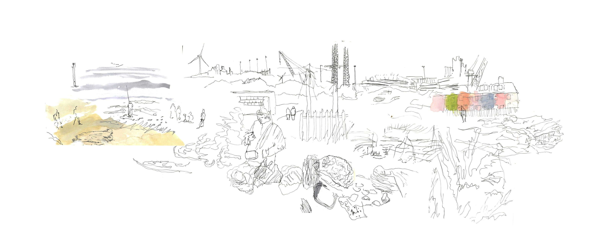

Contemporary Drawing Practice
My work is grounded in the human response to place.
Sometimes the practice begins with an instinctive attraction to a particular place; at other times, an unfamiliar location is chosen at random. Through on-site drawing, I record the lines, colours, textures and details that capture my attention.
The significance of a place sometimes becomes apparent while I am there. More often, it emerges later in the studio, as fragments of observation are examined, compared and rearranged. This process allows time for reflection on what initially drew me to a subject and why certain details remained significant enough to record.
My practice has also expanded into the investigation of objects, extending this interest in the relationships between people, their surroundings and the things they encounter.
Drawing therefore becomes both an act of observation and a process of discovery.